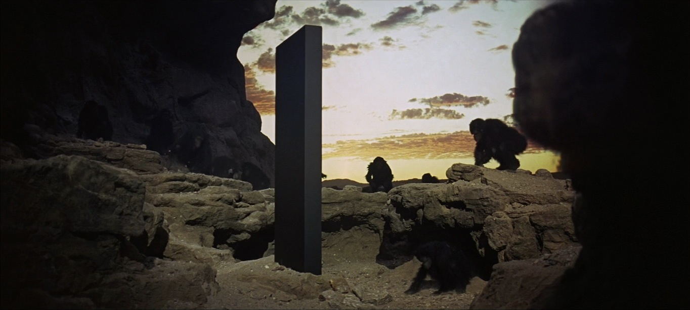

It is a strange realism, but it is a strange reality
The carrier bag theory of fiction (1986) by Ursula K. Le Guin
In the temperate and tropical regions where it appears that hominids evolved into human beings, the principal food of the species was vegetable. Sixty-five to eighty percent of what human beings ate in those regions in Paleolithic, Neolithic, and prehistoric times was gathered; only in the extreme Arctic was meat the staple food. The mammoth hunters spectacularly occupy the cave wall and the mind, but what we actually did to stay alive and fat was gather seeds, roots, sprouts, shoots, leaves, nuts, berries, fruits, and grains, adding bugs and mollusks and netting or snaring birds, fish, rats, rabbits, and other tuskless small fry to up the protein. And we didn’t even work hard at it.

Still frames from 2001: A Space Odyssey (1968), a sci-fi film by Stanley Kubrick, famous for avoiding conventional narrative techniques. It is a conceptual approach on the dichotomies between human and machine, human and space, human and human, and the self and the self.
Fifteen hours a week for subsistence leaves a lot of time for other things. So much time that maybe the restless ones who didn’t have a baby around to enliven their life, or skill in making or cooking or singing, or very interesting thoughts to think, decided to slope off and hunt mammoths. The skillful hunters would come staggering back with a load of meat, a lot of ivory, and a story. It wasn’t the meat that made the difference. It was the story.
That story not only has Action, it has a Hero. Heroes are powerful. Before you know it, the men and women in the wild-oat patch and their kids and the skills of makers and the thoughts of the thoughtful and the songs of the singers are all part of it, have all been pressed into service in the tale of the Hero. But it isn’t their story. It’s his.
But no, this cannot be. Where is that wonderful, big, long, hard thing, a bone, I believe, that the Ape Man first bashed somebody in the movie and then, grunting with ecstasy at having achieved the first proper murder, flung up into the sky, and whirling there it became a space ship thrusting its way into the cosmos to fertilize it and produce at the end of the movie a lovely fetus, a boy of course, drifting around the Milky Way without (oddly enough) any womb, any matrix at all? I don’t know. I don’t even care. I’m not telling that story. We’ve heard it, we’ve all heard about all the sticks and spears and swords, the things to bash and poke and hit with, the long, hard things, but we have not heard about the thing to put things in, the container for the thing contained. That is a new story. That is news. With or before the tool that forces energy outward, we made the tool that brings energy home. It makes sense to me. I am an adherent of what Fisher calls the Carrier Bag Theory of human evolution.
Still frame from 2001: A Space Odyssey (1968), by Stanley Kubrick, a relevant example of the role of fiction in the persuit of meaning, as explored in the essay by Ursula K. Le Guin.
This theory not only explains large areas of theoretical obscurity and avoids large areas of theoretical nonsense (inhabited largely by tigers, foxes, and other highly territorial mammals); it also grounds me, personally, in human culture in a way I never felt grounded before. So long as culture was explained as originating from and elaborating upon the use of long, hard objects for sticking, bashing, and killing, I never thought that I had, or wanted, any particular share in it. (“What Freud mistook for her lack of civilization is woman’s lack of loyalty to civilization,” Lillian Smith observed.) The society, the civilization they were talking about, these theoreticians, was evidently theirs; they owned it, they liked it; they were human, fully human, bashing, sticking, thrusting, killing. Wanting to be human too, I sought for evidence that I was; but if that’s what it took, to make a weapon and kill with it, then evidently I was either extremely defective as a human being, or not human at all.
If it is a human thing to do to put something you want, because it’s useful, edible, or beautiful, into a bag, or a basket, or a bit of rolled bark or leaf, or a net woven of your own hair, or what have you, and then take it home with you, home being another, larger kind of pouch or bag, a container for people, and then later on you take it out and eat it or share it or store it up for winter in a solider container or put it in the medicine bundle or the shrine or the museum, the holy place, the area that contains what is sacred, and then next day you probably do much the same again — if to do that is human, if that’s what it takes, then I am a human being after all. Fully, freely, gladly, for the first time.
Still frame from 2001: A Space Odyssey (1968), by Stanley Kubrick, a relevant example of the role of fiction in the persuit of meaning, as explored in the essay by Ursula K. Le Guin.
It is the story that makes the difference. It is the story that hid my humanity from me, the story the mammoth hunters told about bashing, thrusting, raping, killing, about the Hero. The wonderful, poisonous story of Botulism. The killer story.
It sometimes seems that the story is approaching its end. Let there be no more telling of stories at all, some of us out here in the wild oats, amid the alien corn, think we’d better start telling another one, which maybe people can go on with when the old one’s finished. Maybe. The trouble is, we’ve all let ourselves become part of the killer story, and so we may get finished along with it. Hence it is with a certain feeling of urgency that I seek the nature, subject, words of the other story, the untold one, the life story.
One relationship among elements in the novel may well be that of conflict, but the reduction of narrative to conflict is absurd.
Still frame from 2001: A Space Odyssey (1968), a sci-fi film by Stanley Kubrick, an exploration of evolution and of the notion of time. It is a deep exploration of the role of fiction in our perception of reality and linear time, a pattern of a great deal of mythology.
Finally, it’s clear that the Hero does not look well in this bag. He needs a stage or a pedestal or a pinnacle. You put him in a bag and he looks like a rabbit, like a potato.
So, when I came to write science-fiction novels, I came lugging this great heavy sack of stuff, my carrier bag full of wimps and klutzes, and tiny grains of things smaller than a mustard seed, and intricately woven nets which when laboriously unknotted are seen to contain one blue pebble, an imperturbably functioning chronometer telling the time on another world, and a mouse’s skull; full of beginnings without ends, of initiations, of losses, of transformations and translations, and far more tricks than conflicts, far fewer triumphs than snares and delusions.
If science fiction is the mythology of modern technology, then its myth is tragic. “Technology,” or “modern science”, is a heroic undertaking, Herculean, Promethean, conceived as triumph, hence ultimately as tragedy. The fiction embodying this myth will be, and has been, triumphant (Man conquers earth, space, aliens, death, the future, etc.) and tragic (apocalypse, holocaust, then or now).
It is a strange realism, but it is a strange reality. Science fiction properly conceived, like all serious fiction, however funny, is a way of trying to describe what is in fact going on, what people actually do and feel, how people relate to everything else in this vast stack, this belly of the universe, this womb of things to be and tomb of things that were, this unending story. In it, as in all fiction, there is room enough to keep even Man where he belongs, in his place in the scheme of things; there is time enough to gather plenty of wild oats and sow them too, and sing to little Oom, and listen to Ool’s joke, and watch newts, and still the story isn’t over. Still there are seeds to be gathered, and room in the bag of stars.
Ursula K. Le Guin (1986), The Carrier Bag Theory of Fiction, an essay on the role of fiction in our perception of the world as humans